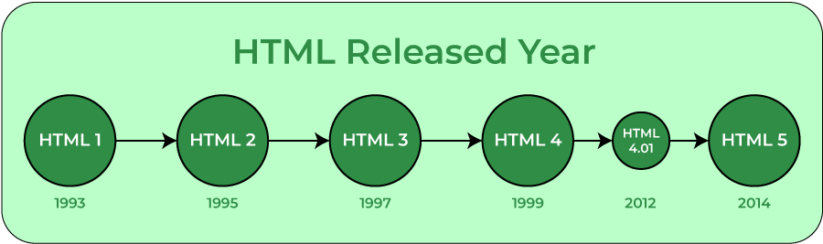

Introduction
What is HTML ?
HTML is the language for describing the structure of Web pages. HTML gives authors the means to:
- Publish online documents with headings, text, tables, lists, photos, etc.
- Retrieve online information via hypertext links, at the click of a button.
- Design forms for conducting transactions with remote services, for use in searching for information, making reservations, ordering products, etc.
- Include spread-sheets, video clips, sound clips, and other applications directly in their documents.
With HTML, authors describe the structure of pages using markup. The elements of the language label pieces of content such as “paragraph,” “list,” “table,” and so on.
What is CSS ?
CSS is the language for describing the presentation of Web pages, including colors, layout, and fonts. It allows one to adapt the presentation to different types of devices, such as large screens, small screens, or printers. CSS is independent of HTML and can be used with any XML-based markup language. The separation of HTML from CSS makes it easier to maintain sites, share style sheets across pages, and tailor pages to different environments. This is referred to as the separation of structure (or: content) from presentation.
Overview
How did HTML generate ?
HTML is a markup language used by the browser to manipulate text, images, and other content, in order to display it in the required format. HTML was created by Tim Berners-Lee in 1991. The first-ever version of HTML was HTML 1.0, but the first standard version was HTML 2.0, published in 1995.
Elements and tags :-
HTML uses predefined tags and elements which tell the browser how to properly display the content. Remember to include closing tags. If omitted, the browser applies the effect of the opening tag until the end of the page.

HTML page structure :-
The basic structure of an HTML page is laid out below. It contains the essential building-block elements (i.e. doctype declaration, HTML, head, title, and body elements) upon which all web pages are created.

History
!DOCTYPE html:
This is the document type declaration (not technically a tag). It declares a document as being an HTML document. The doctype declaration is not case-sensitive.
Html:
This tag is used to define the root element of HTML document. This tag tells the browser that it is an HTML document. It is the second outer container element that contains all other elements within it.
Head:
This tag is used to define the head portion of the HTML document that contains information related to the document. Elements within the head tag are not visible on the front-end of a webpage.
Body:
The body tag is used to enclose all the visible content of a webpage. In other words, the body content is what the browser will show on the front end.
About CSS
Understanding how your code is organized allows anybody to jump straight into the action from day one. A simple way of doing this is creating a map of your file structure where you can explain what’s in it and what should go where. When doing this pay special attention to those places where there could be ambiguity. For instance, indicating that the file “buttons.css” contains styles for buttons is not very helpful, but indicating that the “custom” directory is where custom styles for the theme are located can be a time saver.
Here's the example
Project Root
└── srs
├── styles // Base styles. Styles placed here should be available anywhere in the
application
├── bootstrap-custom // Custom styles that overwrite bootstrap
├── custom // Custom styles created for the application
├── demos // Demos to illustrate styles and interactions for the style guide
├── fonts
├── img // Images used ONLY in stylesheets
├── variables // Variables used in the custom theme
└── styles.less // Imports of all the base stylesheets
└── components
├── alerts
└── alert.less // Custom styles for the alert component. Every component has its own
stylesheet that allows to customize it specifically preventing bloat and style leaking.
Conclusion
- Applications across industries
- Stand out from the crowd
- Easy to learn
- Learn other coding languages faster
- Build your confidence and craft a new career
Being able to build websites or having an understanding of how these languages are utilized can help you build optimized, user-friendly websites and without the basics you’ll struggle for better results. Not only are you more sought after when it comes to web-development but also in industries such as marketing, design and advertising. For example, as a marketer, knowing how a web page is built allows you to design more effective marketing campaigns. Or if you are an SEO expert, knowing about website structures can help you refine your strategy. Are you responsible for customer success? You could use your HTML knowledge to design a more effective email to send to customers. The possibilities are endless.
Whilst editors such as WordPress and WIX exist providing you with free web-templates to build a website your website looks like everyone else’s and doesn’t capture your uniqueness. Armed with the knowledge of web-development you can create a website for yourself and you don’t need to pay someone else to do it. You get to create websites that stand out of the crowd with an authentic, hand-crafted version of your business with HTML & CSS and saving money on every site you may want to build.
As fundamental web development languages HTML and CSS are a great way to get started with development. This is because these languages offer simple sets of rules that define how to code and are easy to learn. In fact, HTML uses a tag-based structure which is easy to understand even without any prior technical experience, CSS uses a simplistic structure as well making the learning curve for mastery relatively easy.
By understanding HTML and CSS, you will soon be able to get a grasp on other technologies much more quickly and easily, these include JavaScript, PHP and SQL and Python. If you’re looking into becoming more serious about web development, knowing the fundamentals is a good place to start and adding additional languages to your skillset arms you with technical advantages and expertise.
If you’re looking to start a new career in the world of tech, understanding how different languages work to develop your skills is a necessity. These languages currently power the internet and your favorite websites from Netflix to Google and Facebook all use HTML and CSS, so you will have no trouble finding a company that can utilize your skills. Even if you’re not ready for a career change, upskilling yourself with HTML & CSS can provide you with an additional source of income where you can freelance your services to individuals and build your portfolio and your confidence. These skills are currently growing in demand and investing in them now can benefit you in the long run.